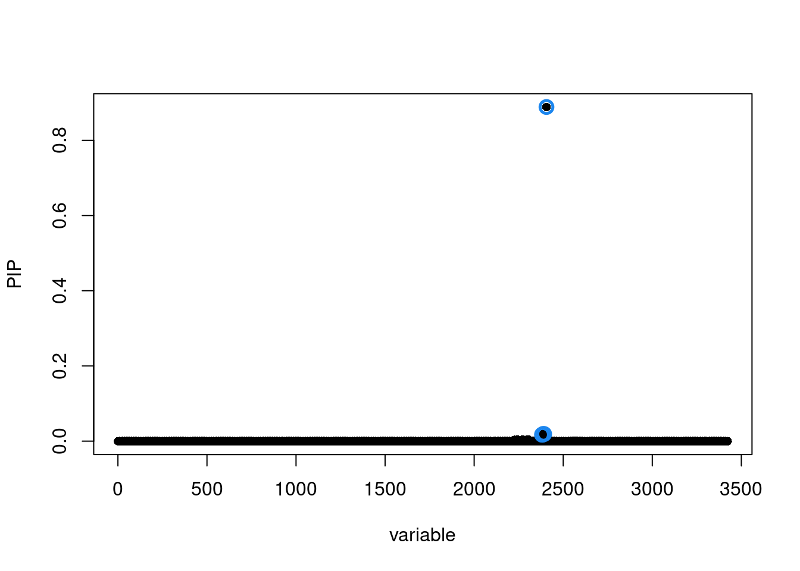
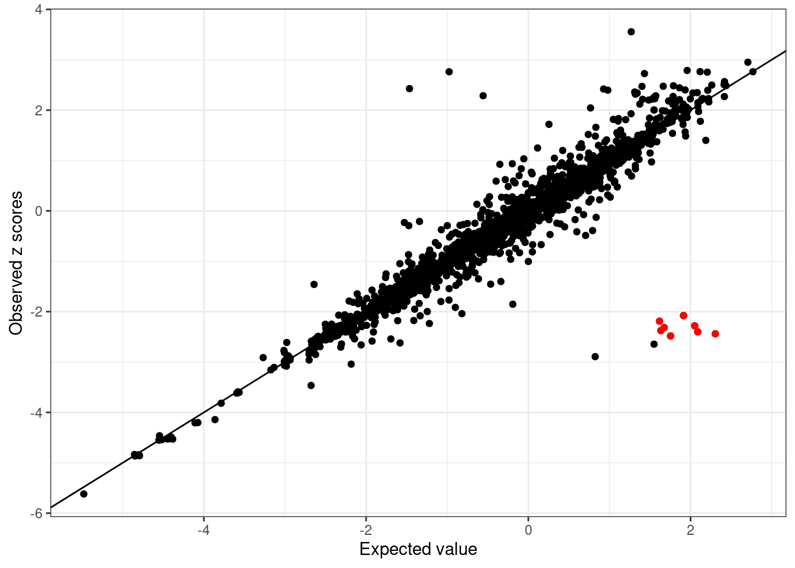

Finemapping using Mapgen with UKBB reference LD matrices
Kaixuan Luo
Last updated: 2023-10-27
Checks: 7 0
Knit directory: analysis_pipelines/
This reproducible R Markdown analysis was created with workflowr (version 1.7.0). The Checks tab describes the reproducibility checks that were applied when the results were created. The Past versions tab lists the development history.
Great! Since the R Markdown file has been committed to the Git repository, you know the exact version of the code that produced these results.
Great job! The global environment was empty. Objects defined in the global environment can affect the analysis in your R Markdown file in unknown ways. For reproduciblity it’s best to always run the code in an empty environment.
The command set.seed(20200524) was run prior to running
the code in the R Markdown file. Setting a seed ensures that any results
that rely on randomness, e.g. subsampling or permutations, are
reproducible.
Great job! Recording the operating system, R version, and package versions is critical for reproducibility.
Nice! There were no cached chunks for this analysis, so you can be confident that you successfully produced the results during this run.
Great job! Using relative paths to the files within your workflowr project makes it easier to run your code on other machines.
Great! You are using Git for version control. Tracking code development and connecting the code version to the results is critical for reproducibility.
The results in this page were generated with repository version 7937f92. See the Past versions tab to see a history of the changes made to the R Markdown and HTML files.
Note that you need to be careful to ensure that all relevant files for
the analysis have been committed to Git prior to generating the results
(you can use wflow_publish or
wflow_git_commit). workflowr only checks the R Markdown
file, but you know if there are other scripts or data files that it
depends on. Below is the status of the Git repository when the results
were generated:
Ignored files:
Ignored: .Rhistory
Ignored: .Rproj.user/
Untracked files:
Untracked: analysis/test_sldsc_splicingAnnot.Rmd
Untracked: code/compute_ldscore_generic_annot.sbatch
Untracked: code/extract_baselineLD_generic_annot.R
Untracked: code/ldsc_make_binary_annot_compute_ldscores_bedfiles.sbatch
Untracked: code/make_ldsc_binary_annots_from_bedfiles.R
Untracked: code/sldsc_annot_generic_baselineLD_separate.sbatch
Untracked: scripts/tmp.R
Unstaged changes:
Modified: analysis/mapgen_torus_enrichment_heart_atlas.Rmd
Modified: analysis/sldsc_example_GTEx_QTLs.Rmd
Modified: analysis/sldsc_pipeline.Rmd
Modified: code/extract_baselineLDv2.2_generic_annot.R
Modified: code/mapgen_trackplots.R
Modified: scripts/run_finemapping.R
Note that any generated files, e.g. HTML, png, CSS, etc., are not included in this status report because it is ok for generated content to have uncommitted changes.
These are the previous versions of the repository in which changes were
made to the R Markdown
(analysis/mapgen_finemapping_ukbb_ld.Rmd) and HTML
(docs/mapgen_finemapping_ukbb_ld.html) files. If you’ve
configured a remote Git repository (see ?wflow_git_remote),
click on the hyperlinks in the table below to view the files as they
were in that past version.
| File | Version | Author | Date | Message |
|---|---|---|---|---|
| Rmd | 7937f92 | kevinlkx | 2023-10-27 | wflow_publish("analysis/mapgen_finemapping_ukbb_ld.Rmd") |
| html | c3fd810 | kevinlkx | 2023-10-27 | Build site. |
| Rmd | 0437fe6 | kevinlkx | 2023-10-27 | wflow_publish("analysis/mapgen_finemapping_ukbb_ld.Rmd") |
| html | e882df5 | kevinlkx | 2023-10-27 | Build site. |
| Rmd | 62f3d8a | kevinlkx | 2023-10-27 | wflow_publish("analysis/mapgen_finemapping_ukbb_ld.Rmd") |
library(mapgen)
library(tidyverse)
library(susieR)
library(ggplot2)
load_UKBB_LD_matrix <- function(LD_Blocks, LD_dir, locus){
if(!locus %in% LD_Blocks$locus){
stop("locus is not in LD_blocks!")
}
LD_Block <- LD_Blocks[LD_Blocks$locus == locus, ]
filename <- sprintf("ukb_b37_0.1_chr%d.R_snp.%d_%d", LD_Block$chr, LD_Block$start, LD_Block$end)
R <- readRDS(file.path(LD_dir, paste0(filename, ".RDS")))
var_info <- data.table::fread(file.path(LD_dir, paste0(filename, ".Rvar")))
res <- list(R = R, var_info = var_info)
}
match_gwas_LDREF <- function(sumstats, R, var_info){
selected.sumstats <- sumstats %>% dplyr::filter(snp %in% var_info$id)
LDREF_index <- na.omit(match(selected.sumstats$snp, var_info$id))
matched.R <- R[LDREF_index, LDREF_index]
stopifnot(nrow(selected.sumstats) == nrow(matched.R))
return(list(sumstats = selected.sumstats,
R = matched.R))
}Load Athma GWAS summary statistics (from Ethan Zhong)
gwas.file <- '/project2/xinhe/shared_data/mapgen/example_data/GWAS/aoa_v3_gwas_ukbsnps_susie_input.txt.gz'
gwas.sumstats <- vroom::vroom(gwas.file, col_names = TRUE, show_col_types = FALSE)
head(gwas.sumstats)# A tibble: 6 × 10
chr pos beta se a0 a1 snp pval zscore locus
<dbl> <dbl> <dbl> <dbl> <chr> <chr> <chr> <dbl> <dbl> <dbl>
1 1 693731 0.00277 0.0156 A G rs12238997 0.859 0.178 1
2 1 707522 0.00337 0.0169 G C rs371890604 0.841 0.200 1
3 1 717587 -0.0538 0.0429 G A rs144155419 0.210 -1.25 1
4 1 723329 0.00182 0.128 A T rs189787166 0.989 0.0143 1
5 1 729679 0.00577 0.0142 C G rs4951859 0.684 0.407 1
6 1 730087 -0.00465 0.0220 T C rs148120343 0.832 -0.212 1n = 336210LD blocks
LD_blocks <- readRDS(system.file('extdata', 'LD.blocks.EUR.hg19.rds', package='mapgen'))
head(LD_blocks, 3) chr start end locus
1 1 10583 1892607 1
2 1 1892607 3582736 2
3 1 3582736 4380811 3Process GWAS summary statistics
gwas.sumstats <- process_gwas_sumstats(gwas.sumstats,
chr='chr',
pos='pos',
beta='beta',
se='se',
a0='a0',
a1='a1',
snp='snp',
pval='pval',
LD_Blocks=LD_blocks)Cleaning summary statistics...
Assigning GWAS SNPs to LD blocks...
Skipped matching GWAS with bigSNP reference panel. Select GWAS significant loci with -log10(pval) < 5e-8
if(max(gwas.sumstats$pval) <= 1){
gwas.sumstats <- gwas.sumstats %>% dplyr::mutate(pval = -log10(pval))
}
sig.loci <- gwas.sumstats %>% dplyr::filter(pval > -log10(5e-8)) %>% dplyr::pull(locus) %>% unique()
sumstats.sigloci <- gwas.sumstats[gwas.sumstats$locus %in% sig.loci, ]
cat(length(sig.loci), "significant loci.\n")19 significant loci.Load LD matrix, match variants between GWAS and LD matrix
LD_dir <- "/project2/mstephens/wcrouse/UKB_LDR_0.1_b37"
locus <- sig.loci[1]
cat("locus:", locus, "\n")locus: 101 LD_matrix <- load_UKBB_LD_matrix(LD_blocks, LD_dir, locus)
matched.sumstat.LD.res <- match_gwas_LDREF(gwas.sumstats, LD_matrix$R, LD_matrix$var_info)
sumstats.locus <- matched.sumstat.LD.res$sumstats
R.locus <- matched.sumstat.LD.res$ROriginal data
Estimated lambda
lambda <- susieR::estimate_s_rss(sumstats.locus$zscore, R = R.locus, n = n)
lambda[1] 0.0002010674Plot for the observed z scores vs the expected z scores
condz <- susieR::kriging_rss(sumstats.locus$zscore, R = R.locus, n=n, s = lambda)
condz$plot
| Version | Author | Date |
|---|---|---|
| e882df5 | kevinlkx | 2023-10-27 |
Run SuSiE with LD matrices
LD_matrices <- list(R.locus)
names(LD_matrices) <- locus
susie.locus.res <- run_finemapping(sumstats.locus, LD_matrices = LD_matrices, priortype = 'uniform', n = n, L = 10)Finemapping locus 101...
Run susie_rss...susie.locus.res[[1]]$sets$cs
$cs$L1
[1] 2381 2383 2388 2393 2406
$purity
min.abs.corr mean.abs.corr median.abs.corr
L1 0.8397768 0.935727 0.999153
$cs_index
[1] 1
$coverage
[1] 0.961074
$requested_coverage
[1] 0.95susie_plot(susie.locus.res[[1]], y='PIP')
| Version | Author | Date |
|---|---|---|
| e882df5 | kevinlkx | 2023-10-27 |
Flip alleles for selected variants
Flip alleles for 10 variants with abs(z-scores) > 2
seed = 1
set.seed(seed)
flip_index <- sample(which(sumstats.locus$zscore > 2), 10)
sumstats.locus.flip <- sumstats.locus
sumstats.locus.flip$zscore[flip_index] <- -sumstats.locus$zscore[flip_index]
sumstats.locus.flip[flip_index, ]# A tibble: 10 × 10
chr pos beta se a0 a1 snp pval zscore locus
<int> <dbl> <dbl> <dbl> <chr> <chr> <chr> <dbl> <dbl> <dbl>
1 1 199012985 0.0694 0.0279 C T rs75649303 1.88 -2.48 101
2 1 198634209 0.0219 0.0106 A C rs4915152 1.42 -2.08 101
3 1 197334422 0.0373 0.0164 C T rs61829425 1.65 -2.28 101
4 1 198628622 0.0243 0.0105 G C rs1326274 1.69 -2.32 101
5 1 198640487 0.0990 0.0413 C T rs72738033 1.79 -2.40 101
6 1 198596439 0.0230 0.0105 T G rs2026562 1.54 -2.19 101
7 1 198903973 0.100 0.0410 T C rs61822073 1.83 -2.44 101
8 1 198777401 0.107 0.0405 C T rs74769776 2.09 -2.65 101
9 1 198619888 0.0249 0.0105 T G rs1326272 1.76 -2.38 101
10 1 198804286 0.117 0.0405 G A rs557279644 2.42 -2.89 101cat("Allele switched variants:", sort(sumstats.locus.flip$snp[flip_index]), "\n")Allele switched variants: rs1326272 rs1326274 rs2026562 rs4915152 rs557279644 rs61822073 rs61829425 rs72738033 rs74769776 rs75649303 Estimated lambda
lambda <- susieR::estimate_s_rss(sumstats.locus.flip$zscore, R = R.locus, n = n)
lambda[1] 0.04942435Compares observed z scores vs the expected z scores
condz <- susieR::kriging_rss(sumstats.locus.flip$zscore, R = R.locus, n=n, s = lambda)
condz$plot
| Version | Author | Date |
|---|---|---|
| e882df5 | kevinlkx | 2023-10-27 |
The possible allele switched variants are labeled as red points (logLR > 2 and abs(z) > 2).
detected_index <- which(condz$conditional_dist$logLR > 2 & abs(condz$conditional_dist$z) > 2)
cat(sprintf("Detected %d variants with possible allele switched", length(detected_index)), "\n")Detected 8 variants with possible allele switched cat("Possible allele switched variants:", sort(sumstats.locus.flip$snp[detected_index]), "\n")Possible allele switched variants: rs1326272 rs1326274 rs2026562 rs4915152 rs61822073 rs61829425 rs72738033 rs75649303 condz$conditional_dist$flipped <- 0
condz$conditional_dist$flipped[flip_index] <- 1
condz$conditional_dist$detected <- 0
condz$conditional_dist$detected[detected_index] <- 1
cat(sprintf("%d out of %d flipped variants detecte by kriging_rss. \n",
length(intersect(detected_index, flip_index)), length(flip_index)))8 out of 10 flipped variants detecte by kriging_rss. condz$conditional_dist[union(flip_index, detected_index),] z condmean condvar z_std_diff logLR flipped detected
3006 -2.482570 1.7540411 0.16143518 -10.54434 5.395386 1 1
2329 -2.077095 1.9135410 0.05479728 -17.04758 8.394765 1 1
35 -2.280709 2.0511728 0.08858013 -14.55487 7.958970 1 1
2317 -2.316972 1.6754437 0.05321835 -17.30633 3.219456 1 1
2355 -2.400836 2.0890780 0.09667435 -14.44051 7.621941 1 1
2214 -2.189495 1.6174426 0.05589291 -16.10265 4.170299 1 1
2876 -2.439743 2.3052580 0.06365209 -18.80745 8.836932 1 1
2634 -2.645838 1.5501971 0.08402155 -14.47584 1.675066 1 0
2289 -2.375412 1.6340602 0.05325781 -17.37383 2.401655 1 1
2711 -2.892958 0.8243904 0.12105241 -10.68431 0.712998 1 0ggplot(condz$conditional_dist, aes(x = condmean, y = z, col = factor(flipped))) +
geom_point() +
scale_colour_manual(values = c("0" = "black", "1" = "red")) +
labs(x = "Expected", y = "Observed z scores", color = "Allele flipped") +
theme_bw()
ggplot(condz$conditional_dist, aes(x = condmean, y = z, col = factor(detected))) +
geom_point() +
scale_colour_manual(values = c("0" = "black", "1" = "red")) +
labs(x = "Expected", y = "Observed z scores", color = "Possible allele switched") +
theme_bw()
| Version | Author | Date |
|---|---|---|
| c3fd810 | kevinlkx | 2023-10-27 |
Run SuSiE including variants with flipped alleles
LD_matrices <- list(R.locus)
names(LD_matrices) <- locus
susie.locus.res <- run_finemapping(sumstats.locus.flip, LD_matrices = LD_matrices, priortype = 'uniform', n = n, L = 10)Finemapping locus 101...
Run susie_rss...susie.locus.res[[1]]$sets$cs
$cs$L1
[1] 2381 2383 2388 2393 2406
$purity
min.abs.corr mean.abs.corr median.abs.corr
L1 0.8397768 0.935727 0.999153
$cs_index
[1] 1
$coverage
[1] 0.961074
$requested_coverage
[1] 0.95susie_plot(susie.locus.res[[1]], y='PIP')
| Version | Author | Date |
|---|---|---|
| e882df5 | kevinlkx | 2023-10-27 |
sessionInfo()R version 4.2.0 (2022-04-22)
Platform: x86_64-pc-linux-gnu (64-bit)
Running under: CentOS Linux 7 (Core)
Matrix products: default
BLAS/LAPACK: /software/openblas-0.3.13-el7-x86_64/lib/libopenblas_haswellp-r0.3.13.so
locale:
[1] LC_CTYPE=en_US.UTF-8 LC_NUMERIC=C LC_TIME=C
[4] LC_COLLATE=C LC_MONETARY=C LC_MESSAGES=C
[7] LC_PAPER=C LC_NAME=C LC_ADDRESS=C
[10] LC_TELEPHONE=C LC_MEASUREMENT=C LC_IDENTIFICATION=C
attached base packages:
[1] stats graphics grDevices utils datasets methods base
other attached packages:
[1] susieR_0.12.27 forcats_1.0.0 stringr_1.5.0 dplyr_1.1.0
[5] purrr_1.0.1 readr_2.1.4 tidyr_1.3.0 tibble_3.1.8
[9] ggplot2_3.4.1 tidyverse_1.3.2 mapgen_0.5.6 workflowr_1.7.0
loaded via a namespace (and not attached):
[1] googledrive_2.0.0 colorspace_2.1-0
[3] rjson_0.2.21 ellipsis_0.3.2
[5] rprojroot_2.0.3 XVector_0.38.0
[7] GenomicRanges_1.48.0 fs_1.6.1
[9] rstudioapi_0.14 farver_2.1.1
[11] bit64_4.0.5 fansi_1.0.4
[13] lubridate_1.9.2 xml2_1.3.3
[15] codetools_0.2-18 cachem_1.0.6
[17] knitr_1.42 jsonlite_1.8.4
[19] Rsamtools_2.12.0 broom_1.0.3
[21] dbplyr_2.3.0 compiler_4.2.0
[23] httr_1.4.4 backports_1.4.1
[25] RcppZiggurat_0.1.6 assertthat_0.2.1
[27] Matrix_1.5-3 fastmap_1.1.0
[29] gargle_1.3.0 cli_3.6.0
[31] later_1.3.0 htmltools_0.5.4
[33] tools_4.2.0 gtable_0.3.1
[35] glue_1.6.2 GenomeInfoDbData_1.2.9
[37] Rcpp_1.0.10 Biobase_2.58.0
[39] cellranger_1.1.0 jquerylib_0.1.4
[41] vctrs_0.5.2 Biostrings_2.66.0
[43] rtracklayer_1.58.0 xfun_0.37
[45] plyranges_1.18.0 ps_1.7.2
[47] rvest_1.0.3 timechange_0.2.0
[49] lifecycle_1.0.3 irlba_2.3.5
[51] restfulr_0.0.15 XML_3.99-0.13
[53] googlesheets4_1.0.1 getPass_0.2-2
[55] zlibbioc_1.44.0 scales_1.2.1
[57] vroom_1.6.1 hms_1.1.2
[59] promises_1.2.0.1 MatrixGenerics_1.10.0
[61] parallel_4.2.0 SummarizedExperiment_1.28.0
[63] yaml_2.3.7 sass_0.4.5
[65] reshape_0.8.9 stringi_1.7.12
[67] highr_0.10 BiocIO_1.8.0
[69] S4Vectors_0.36.1 BiocGenerics_0.44.0
[71] BiocParallel_1.32.5 GenomeInfoDb_1.34.9
[73] rlang_1.0.6 pkgconfig_2.0.3
[75] bitops_1.0-7 matrixStats_0.63.0
[77] evaluate_0.20 lattice_0.20-45
[79] labeling_0.4.2 GenomicAlignments_1.34.0
[81] Rfast_2.0.6 bit_4.0.5
[83] processx_3.8.0 tidyselect_1.2.0
[85] plyr_1.8.7 magrittr_2.0.3
[87] R6_2.5.1 IRanges_2.32.0
[89] generics_0.1.3 DelayedArray_0.24.0
[91] DBI_1.1.3 pillar_1.8.1
[93] haven_2.5.1 whisker_0.4
[95] withr_2.5.0 RCurl_1.98-1.10
[97] mixsqp_0.3-43 modelr_0.1.10
[99] crayon_1.5.2 utf8_1.2.3
[101] tzdb_0.3.0 rmarkdown_2.20
[103] grid_4.2.0 readxl_1.4.2
[105] data.table_1.14.6 callr_3.7.3
[107] git2r_0.30.1 reprex_2.0.2
[109] digest_0.6.31 httpuv_1.6.5
[111] stats4_4.2.0 munsell_0.5.0
[113] bslib_0.4.2